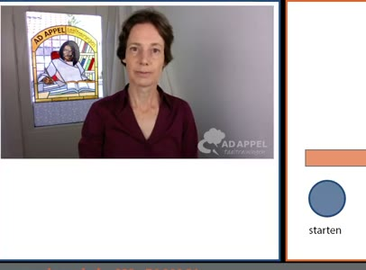
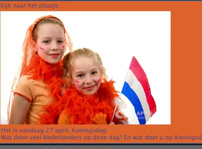
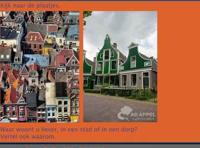
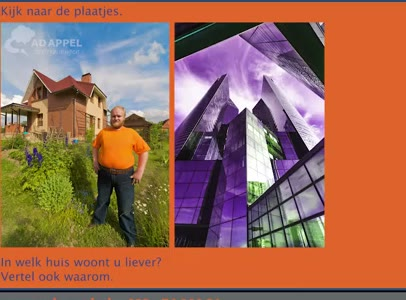
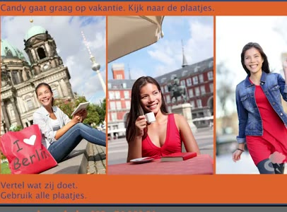
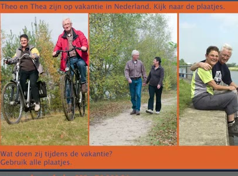

🔊 5 題 🖼️ 6 題 | YouTube ▶
🗣 Het examen is gebaseerd op examenvragen van DUO.
這個考試是基於DUO的考題。
Vertel ook waarom.
請說明原因。
🗣 Ja, dat is snel! Wat vindt u een leuk programma op tv? Vertel ook welk programma u niet leuk vindt.
是的，那很快！ 您覺得電視上有什麼有趣的節目？ 請說明您不喜歡哪個節目。
Een film is leuk. Voetbal is niet leuk.
電影很有趣。足球不有趣。
🗣 Welk fruit eet u graag? Vertel ook hoe vaak u fruit eet.
您喜歡吃什麼水果？ 請說明您多久吃一次水果。
Appel. Ik eet elke dag een appel.
蘋果。我每天都吃一顆蘋果。
🗣 In Nederland regent het vaak. Wat vindt u daarvan? Vertel ook hoe het weer is in uw eigen land.
在荷蘭經常下雨。您覺得怎麼樣？ 請說說您自己國家的天氣如何。
Het weer in Nederland is lekker. Het weer in mijn eigen land is ook lekker.
荷蘭的天氣很舒服。 我自己國家的天氣也很舒服。
🗣 Hoe vaak gebruikt u uw telefoon? Vertel ook waarvoor u uw telefoon gebruikt.
您多久使用一次手機？ 請說明您用手機做什麼。
Ik bel elke dag met mijn moeder. Ik was vandaag te laat op mijn werk.
我每天都和媽媽通電話。 我今天上班遲到了。

🗣 Waarom bent u wel eens te laat? Zeg ook wat u dan doet. Ik sta soms in de file. Dan bel ik mijn baas. Kijk naar het plaatje. Het is vandaag 5 december. Wat doen veel Nederlanders op deze dag? En wat doet u op 5 december?
您為什麼偶爾會遲到？ 請說明您那時候做什麼。 我有時候塞車。這時候我會打電話給老闆。 看圖片。今天是12月5日。 很多荷蘭人在這天會做什麼？ 那您12月5日會做什麼？
Zij geven elkaar een cadeau. Ik doe niet mee met Sinterklaas.
他們互送禮物。我不參加聖尼古拉斯節。

🗣 Kijk naar het plaatje. Het is vandaag 27 april. Koningsdag. Wat doen veel Nederlanders op deze dag? En wat doet u op Koningsdag?
看圖片。 今天是4月27日，國王節。 很多荷蘭人在這天會做什麼？ 那您國王節會做什麼？
Veel Nederlanders dragen dan oranje kleding. Ik draag op die dag ook oranje kleding.
很多荷蘭人會穿橘色衣服。 我那天也會穿橘色衣服。

🗣 Kijk naar de plaatjes. Waar woont u liever? In een stad of in een dorp? Vertel ook waarom.
看圖片。您比較想住在哪裡？ 在城市還是鄉村？請說明原因。
Ik woon liever in de stad. In de stad zijn winkels en restaurants.
我比較想住在城市。 城市裡有商店和餐廳。

🗣 Kijk naar de plaatjes. In welk huis woont u liever? Vertel ook waarom.
看圖片。您比較想住在哪一棟房子？ 請說明原因。
Ik woon liever in een flat. Ik wil geen tuin.
我比較想住在公寓。 我不要有花園。

🗣 Candy gaat graag op vakantie. Kijk naar de plaatjes. Vertel wat zij doet. Gebruik alle plaatjes.
Candy 喜歡去度假。看圖片。 請說說她做什麼。請使用所有圖片。
Zij gaat naar een grote stad. Zij gaat shoppen. En zij gaat koffie drinken op een terras. Theo en Thea zijn op vakantie in Nederland.
她去大城市。她去購物。 而且她去露天咖啡座喝咖啡。 Theo和Thea在荷蘭度假。

🗣 Kijk naar de plaatjes. Wat doen zij tijdens de vakantie? Gebruik alle plaatjes.
看圖片。 他們度假時做些什麼？請使用所有圖片。
Zij fietsen. Zij wandelen. En zij zitten bij het water.
他們在騎腳踏車。他們在散步。 他們坐在水邊。